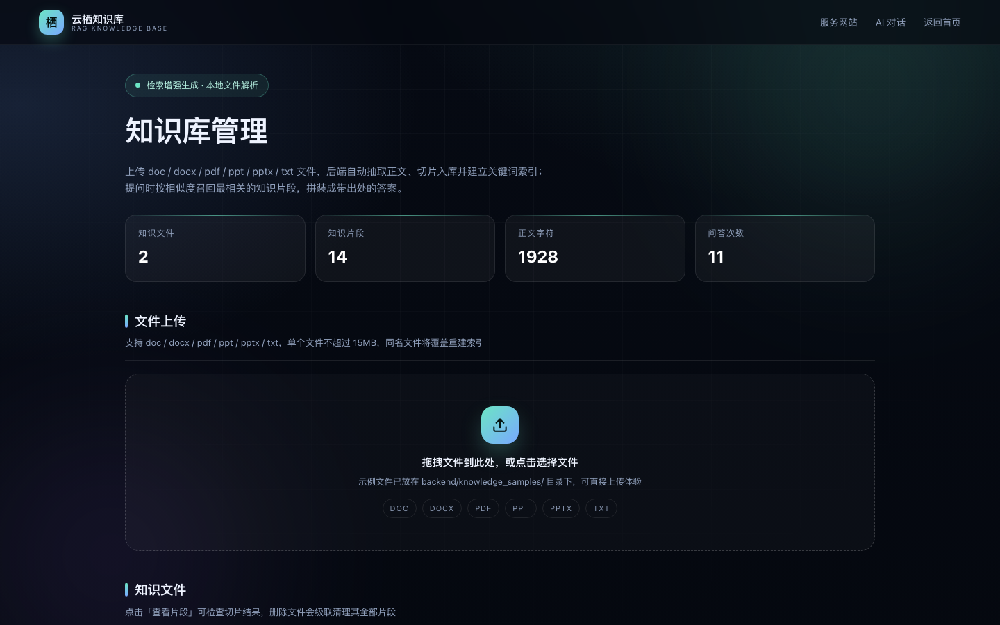

主要功能
- 文档上传（multer 单文件），列表展示文件名、大小、分片数与状态
- 查看某文档的全部分片内容，支持删除文档并级联清理分片
- 知识库统计卡片：文档数、分片数、最近更新时间
- 在线提问：检索相似片段拼装上下文，返回带引用的答案
面向民宿服务文档的检索增强问答管理页：上传文档后服务端解析并切片入库，可查看分片、统计文档数/分片数，并用自然语言提问获得带引用来源的答案。

GET /api/kb/filesPOST /api/kb/files
GET /api/kb/files/:id/chunksDELETE /api/kb/files/:id
GET /api/kb/statsPOST /api/kb/ask
cd backend && node app.js → http://localhost:8016/sun_kb.html
注意：上传与检索依赖本地 Node 后端与 MySQL，静态托管下数据列表为空；请通过本说明页查看页面效果。